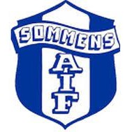

Sommens AIF

Placering förra året:
3:a division 5 (kvalade till 4:an)
Ditt namn och roll i laget:
Johan Andersson (Ny huvudtränare 2024)
Vad har ni för målsättning inför säsongen?
Med den väldigt unga trupp som vi har så har vi satt som mål att
klara oss kvar och hålla oss på rätt sida av kvalstrecket.
Hur ser spelartruppen ut? Nyförvärv/Förluster?
Spelartruppen är mycket stor. Vi har beslutat om att köra tre stycken seniorlag i år.
På förlustsidan så är det bröderna ”Mo” och ”Abbas” Al-Maliki som har gått till Husqvarna IF och IF Hallby.
Samt förra årets succétränare Alfred Palmér.
På nyförvärvsidan så är det 10 spelare från Boxholms IF i åldrarna 16-21 år,
med meriter från både Boxholms div 4 och div 6 lag senaste åren.
Vem i laget kommer att spela en stor roll denna säsong och varför?
William Fager (f.2001). Då han bidrar med lugnet i spelet från sin mittbacksposition,
men även Noah Röjås (f.2006) som är den tekniska spelare alla lag behöver.
Vilket lag ser ni fram emot att möta denna säsong och varför?
Givetvis så är derbyn mot Torpa AIS alltid intressanta, men även de lag vi inte mött förra
året.
Vilka tror ni kommer att vinna serien?
Eksjö som satsat lite extra inför det här året, men jag gissar att även Bäckseda kommer att
utmana i toppen.
Senaste resultat:
Bälaryds IK vs.  3 - 1
3 - 1
 vs. IFK Österbymo 2 - 2
vs. IFK Österbymo 2 - 2
Tranås AIF vs.  5 - 1
5 - 1